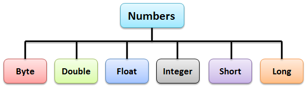

Javaالتعامل مع الأعداد في جافا
مفهوم الأعداد في جافا
أعداد: تعني numbers في اللغة الإنجليزية, و نحن عادةً ما نستخدم أنواع البيانات البدائية ( Primitive Data Types ) لتخزين الأعداد.
أي لتعريف متغير بهدف تخزين عدد, نقوم بتعريفه كـ int أو float أو double إلخ..
مثال
int a = 10;
short b = 50;
float c = 10.5f;
double d = 37.002;
أحياناً يضطر المبرمج أن يستخدم الكائن للنوع و ليس الشكل البدائي للنوع.
من أجل ذلك, جافا تقدم لنا wrapper classes.
ما معنى wrapper classes ؟
كل نوع بيانات بدائي في جافا له كلاس يمثله, و يكون من نفس إسمه, أمثلة:
النوع int يمكن تمثيله بالكلاس Integer.
النوع float يمكن تمثيله بالكلاس Float.
النوع byte يمكن تمثيله بالكلاس Byte.
النوع double يمكن تمثيله بالكلاس Double.
النوع short يمكن تمثيله بالكلاس Short.
النوع long يمكن تمثيله بالكلاس Long.
إذاً الـ wrapper classes هم كل الكلاسات التي تمثل أنواع البيانات البدائية.
هذه الصورة تظهر لك جميع الكلاسات التي تمثل الأعداد.

ما هي فائدة الـ wrapper classes ؟
فكرة الـ wrapper classes جعلنا قادرين على معاملة هذه الأنواع ككائنات و بناء دوال خاصة لهم و لكن المبرمج العادي قد لا يتعامل بتاتاً مع الـ wrapper classes لأنه نادراً ما يحتاج لهم.
مصطلحات تقنية
مثال
Integer a = 10; // int و ليس Integer هنا ستكون a لأن نوع القيمة التي خزنها المتغير boxing هذه العملية تسمى
int b = a + 15; // 15 قبل إضافتها على int لأنه سيتم تحويل قيمته للنوع a بالنسبة للمتغير unboxing هذه العملية تسمى
شرح الكود
دوال الكلاس Math في جافا
إنتبه
ستلاحظ أن جميع الدوال المذكورة في الجدول تتعامل مع أعداد نوعها double و ترجع قيم نوعها double أيضاً.
السبب في ذلك أن النوع double يجعلك قادر على تمرير أي عدد سواء كان نوعه int, long أو float بدون الحاجة إلى تحويله.
الكلاس Math هو كلاس جاهز في جافا, يحتوي على دوال تتعلق بالرياضيات, ذكرنا بعضها في هذا الجدول.
| إسم الدالة مع تعريفها |
public static double abs(double d)
ترجع القيمة المطلقة للعدد الذي نمرره لها مكان البارامتير d.
تابع القراءة » |
public static double ceil(double d)
ترجع العدد الصحيح الأكبر أو الذي يساوي العدد الذي نمرره لها مكان الباراميتر d.
تابع القراءة » |
public static double floor(double d)
ترجع العدد الصحيح الأصغر أو الذي يساوي العدد الذي نمرره لها مكان الباراميتر d.
تابع القراءة » |
public static double rint(double d)
ترجع أقرب عدد صحيح للعدد الذي نمرره لها مكان الباراميتر d.
تابع القراءة » |
public static long round(double d)
ترجع أقرب عدد صحيح للعدد الذي نمرره لها مكان الباراميتر d.
تابع القراءة » |
public static double max(double a, double b)
ترجع العدد الأكبر بين العددين اللذين نمررهما لها مكان الباراميترين a و b.
تابع القراءة » |
public static double min(double a, double b)
ترجع العدد الأصغر بين العددين اللذين نمررهما لها مكان الباراميترين a و b.
تابع القراءة » |
public static double exp(double d)
ترجع قيمة الـ exponential للعدد الذي نمرره لها مكان الباراميتر d.
تابع القراءة » |
public static double log(double d)
ترجع قيمة الـ logarithm للعدد الذي نمرره لها مكان الباراميتر d.
تابع القراءة » |
public static double pow(double a, double b)
تضاعف قيمة الباراميتر a بقيمة الباراميتر b ثم ترجع الناتج.
تابع القراءة » |
public static double sqrt(double d)
ترجع قيمة الجزر التربيعي (square root) للعدد الذي نمرره لها مكان الباراميتر d.
تابع القراءة » |
public static double sin(double d)
ترجع قيمة الـ sine للعدد الذي نمرره لها مكان الباراميتر d.
تابع القراءة » |
public static double cos(double d)
ترجع قيمة الـ cosine للعدد الذي نمرره لها مكان الباراميتر d.
تابع القراءة » |
public static double tan(double d)
ترجع قيمة الـ tangent للعدد الذي نمرره لها مكان الباراميتر d.
تابع القراءة » |
public static double asin(double d)
ترجع قيمة الـ arc sine للعدد الذي نمرره لها مكان الباراميتر d.
تابع القراءة » |
public static double acos(double d)
ترجع قيمة الـ arc cosine للعدد الذي نمرره لها مكان الباراميتر d.
تابع القراءة » |
public static double atan(double d)
ترجع قيمة الـ arc tangent للعدد الذي نمرره لها مكان الباراميتر d.
تابع القراءة » |
public static double toDegrees(double d)
تحول قيمة العدد الذي نمرره لها مكان الباراميتر d لـ Degrees ثم ترجع الناتج.
تابع القراءة » |
public static double toRadians(double d)
تحول قيمة العدد الذي نمرره لها مكان الباراميتر d لـ Radians ثم ترجع الناتج.
تابع القراءة » |
public static double random()
ترجع عدد عشوائي بين 0 و 1.
تابع القراءة » |
ثوابت الكلاس Math في جافا
الكلاس Math يحتوي أيضاً على الثوابت التالية التي تتعلق بالرياضيات.
| إسم الثابت |
تعريفه |
E
| يحتوي على قيمة الـ Exponential. |
PI
| يحتوي على قيمة الـ PI. |
شاهد المثال »
دوال الأعداد في جافا التي تستخدم مع كائنات الـ wrapper classes
ذكرنا بعض الدوال التي تستخدم مع الـ wrapper classes في هذا الجدول.
| إسم الدالة مع تعريفها |
public ... xxxValue()
عبارة عن مجموعة دوال تستخدم لتحويل قيمة الكائن ( الذي يمثل عدد ) لقيمة بدائية تحددها الدالة التي تم إستدعاءها من الكائن و ترجعها.
تابع القراءة » |
public int compareTo(T o)
تقارن قيمة الكائن الذي قام باستدعائها و الذي يمثل عدد ما مع قيمة الكائن التي نمررها لها مكان الباراميتر o.
ترجع 0 إن كانت قيمتهما متساوية, و ترجع 1 إن كانت قيمة الكائن الذي إستدعاها أكبر, و ترجع 1- إن كانت قيمة الكائن الذي إستدعاها أصغر.
تابع القراءة » |
public boolean equals(Object o)
تقارن قيمة الكائن الذي قام باستدعائها و الذي يمثل عدد ما مع قيمة الكائن التي نمررها لها مكان الباراميتر o.
ترجع true إن كانت قيمتهما متساوية, و ترجع false إن لم تكن كذلك.
تابع القراءة » |
public static Integer valueOf(String s)
تحول قيمة الكائن s التي نمررها لها و التي تمثل عدد في الأساس لقيمة نوعها Integer.
تابع القراءة » |
public String toString()
ترجع قيمة الكائن الذي قام باستدعائها و الذي يمثل عدد ما كـ String.
ملاحظة: تحويل القيمة العددية لقيمة نصية مفيد جداً في بعض الحالات و يجعل المبرمج يستفيد من دوال هي في الأصل ليست للتعامل مع الأعداد.
تابع القراءة » |
public ... parseXxx(String s)
عبارة عن مجموعة دوال تستخدم للحصول على القيمة البدائية لعدد مخزن كـ String.
تابع القراءة » |

 محرر الويب
محرر الويب نظام الألوان
نظام الألوان محول الوحدات
محول الوحدات محلل عناوين الشبكات
محلل عناوين الشبكات